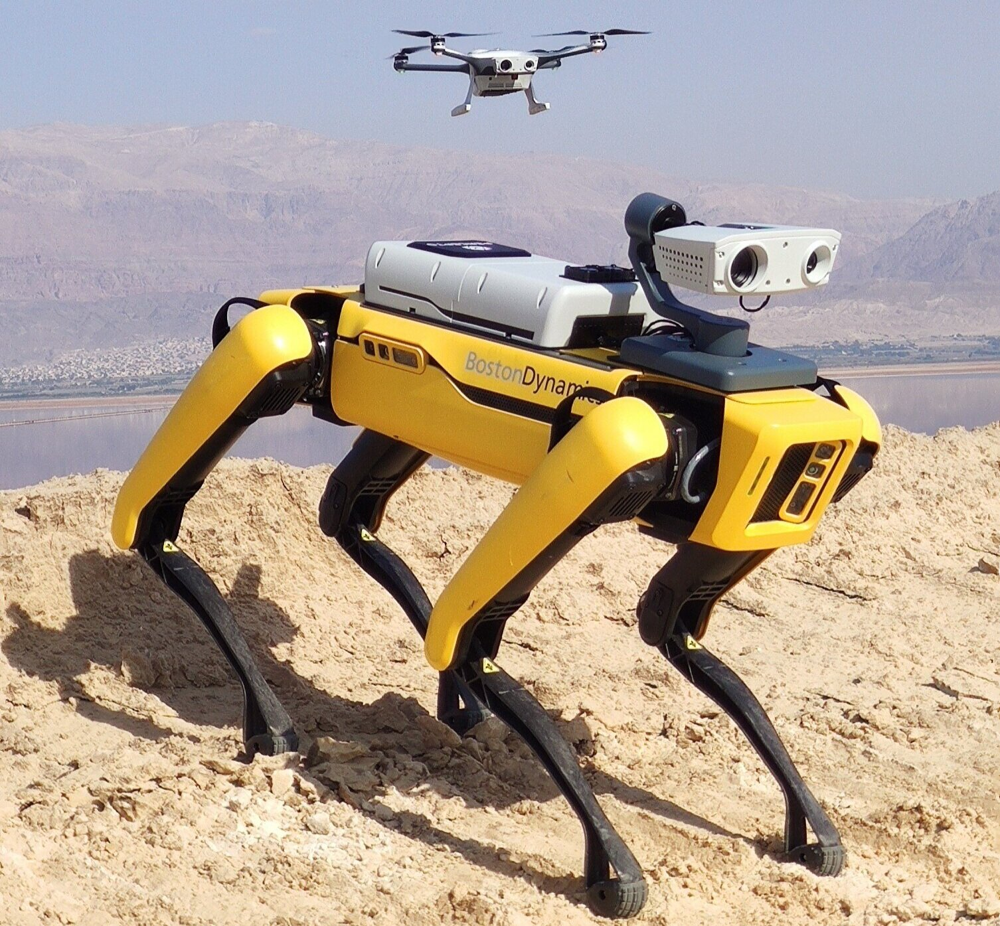
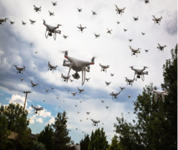

PRESENTATION60 minutes
Intro - UAS Cybersecurity
Module 01
Day 1 – UAV & Drone
Hack Our Drone Workshop — Dark Wolf Solutions
Instructors
Ron Broberg

-
Penetration Tester @ Dark Wolf
-
Previously @ Lockheed Martin
-
Specializing in UAS, IoT and RF
-
DC31 Black Badge Winner IoT CTF
Instructors
Rudy Mendoza
-
Penetration Tester @ Dark Wolf
-
Previoulsy with the U.S Air Force
-
Specializing in UAS, and IoT
-
DC31 Black Badge Winner IoT CTF
Objectives
What is a UAS?
-
Definition of UAS
-
Components: UAV, ground control, communication links
-
Civilian and military applications
-
Rapid growth in usage
-
Increasing complexity

UAS Cybersecurity Overview
-
Unique cyber risks for UAS
-
Integration of IT and OT systems
-
High-value targets
-
Potential for remote attacks
-
Need for robust security

Threat Landscape (1/3)
Eavesdropping
-
Intercepting unencrypted telemetry, video feeds, or RC commands
-
Passive capture with SDR hardware (RTL-SDR, HackRF One)
-
Reveals flight paths, operator locations, payload data
Threat Landscape (2/3)
GPS Spoofing
-
Feeding false GPS signals to the drone's GNSS receiver
-
Causes the drone to fly to unintended locations or return to a false home
-
Cheap SDR hardware can generate spoofed signals
Command Hijacking (C2 Takeover)
-
Injecting unauthorized MAVLink or RC commands
-
Requires access to the control channel
-
Can force landing, RTL, or custom waypoints
Threat Landscape (3/3)
Data Theft
-
Exfiltrating flight logs, mission plans, camera footage
-
Often accomplished via GCS network access or physical access to SD cards
Denial of Service (DoS)
-
RF jamming of control link or GPS
-
Network flooding of GCS WiFi
-
Forces drone into failsafe behavior (hover, RTL, land)
Attack Vectors
| Vector | Method |
|---|---|
| Wireless interception | Passive SDR capture of unencrypted RF |
| Network attacks | Access to GCS WiFi network, then web/SSH exploitation |
| Malware | Malicious firmware or GCS application |
| Physical access | Direct UART/USB access to flight controller or GCS |
| Insider threat | Operator with malicious intent |
| Supply chain | Compromised firmware from manufacturer or update server |
Security Principles: CIA+
Confidentiality – Only authorized parties can read data
Integrity – Data has not been modified in transit
Availability – Systems and data are accessible when needed
Authenticity – The source of data or commands is verified Non-repudiation – Actions cannot be denied after the fact
Authentication & Access Control
-
Default credentials on GCS web interfaces (admin/admin, root/root)
-
Lack of mutual authentication between drone and GCS
-
Unprotected MAVLink endpoints (no system ID enforcement)
-
Bluetooth or WiFi pairing with no PIN or certificate
Best practices:
-
Strong user authentication
-
Role-based access control
-
Multi-factor authentication
-
Secure credential storage
-
Regular access reviews
-
Zero Trust
Data Protection
-
Data at rest
-
Data in transit
-
Secure data storage
-
Data minimization
-
Regular data backups
Communication Security
Telemetry (SiK Radio, 433/915 MHz)
-
Optional AES-128 encryption via NET ID parameter
-
Most deployments leave encryption unconfigured
-
Vulnerable to passive eavesdropping and replay
RC Control
-
Older protocols (PWM, PPM, SBUS) have no encryption
-
DSM2/DSMX vulnerable to replay and brute-force
-
FrSky and newer protocols offer binding but limited authentication
WiFi (GCS Links)
-
Often WPA2-PSK with weak or default passphrases
-
Narrow channel bandwidth technique can crack WPA2 handshakes
-
Unencrypted HTTP management interfaces common
Software & Firmware Security
-
Firmware images often unsigned — no verification before flashing
-
Over-the-air updates frequently unencrypted and unauthenticated
-
Embedded Linux systems with no hardening (open ports, root login, no firewall)
-
Android GCS applications leak credentials, API keys, or hardcoded endpoints
Key technique: Binwalk for firmware extraction and analysis
Physical Security
-
UART debug ports left accessible on production hardware
-
JTAG/SWD debug interfaces enabled
-
SD card accessible without authentication
-
USB interfaces expose ADB, MSC, or serial console
Regulatory & Framework Landscape
| Framework | Scope |
|---|---|
| FAA Part 107 | US commercial UAS operations |
| FAA Part 89 | Remote ID requirements |
| NIST CSF | Risk-based cybersecurity framework |
| NIST SP 800-53 | Security controls catalog |
| ISO/IEC 27001 | Information security management |
| ETSI EN 303 645 | Consumer IoT device security |
| ENISA IoT Baseline | IoT security recommendations |
Risk Assessment Process
-
Identify assets and systems in scope
-
Assess threats and vulnerabilities
-
Determine likelihood and impact
-
Prioritize risks by severity
-
Mitigate through controls and configuration
-
Monitor continuously for new threats
Incident Response for UAS
When a UAS security incident occurs:
-
Detect — identify anomalous behavior (unexpected flight path, loss of link)
-
Contain — land the drone safely, isolate the GCS network
-
Analyze — review flight logs, telemetry, and GCS logs
-
Remediate — patch vulnerability, change credentials, update firmware
-
Report — document findings and lessons learned
Case Study: GPS Spoofing Attack
-
Attacker transmits fake GPS signals
-
UAV receives incorrect location data
-
UAV deviates from intended path
-
Potential for loss or hijack
-
Mitigation: multi-sensor navigation

Case Study: Command Hijacking
-
Attacker intercepts control link
-
Sends unauthorized commands
-
UAV performs unintended actions
-
Risk of crash or theft
-
Mitigation: encrypted control links
Future Trends
-
AI-driven threat detection
-
Quantum-resistant encryption
-
Autonomous security responses
-
Integration with 5G networks
-
Increased regulatory oversight

UAS Cybersecurity Challenges
-
Rapid technology evolution
-
Resource constraints on UAVs
-
Diverse operating environments
-
Balancing usability and security
-
Global regulatory differences
UAS Cybersecurity Opportunities
-
Innovation in secure design
-
Collaboration across industries
-
Standardization efforts
-
Advanced threat intelligence
-
Public-private partnerships
Key Takeaways
-
UAS are complex systems with a wide attack surface spanning air, ground, and RF
-
Most vulnerabilities stem from missing or misconfigured security controls, not novel exploits
-
Encryption, authentication, and firmware integrity are the most impactful controls
-
Operators and manufacturers share responsibility for secure operation